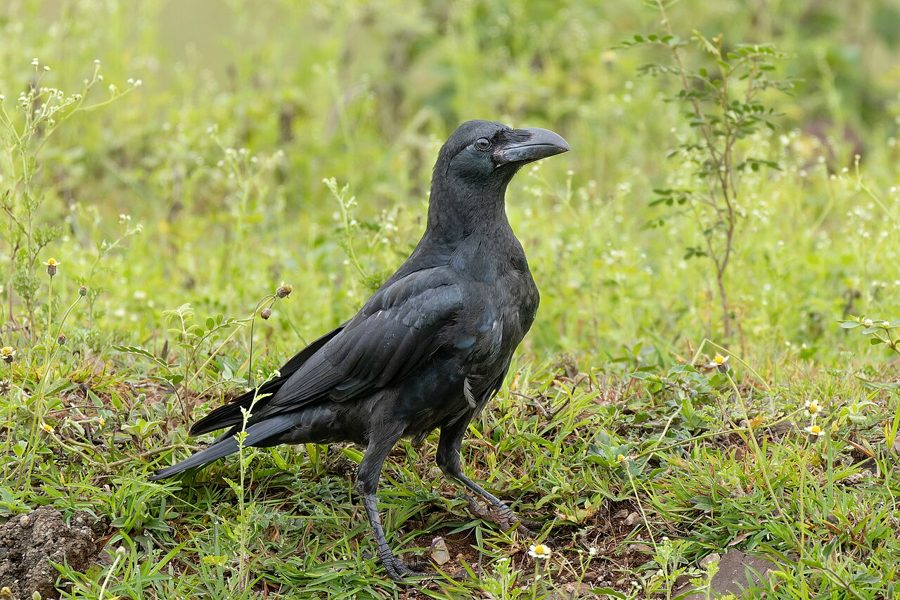

जंगली कौआJungle Crow
Corvus macrorhynchos · Corvidae · BRD-0028

- Scientific name
- Corvus macrorhynchos Wagler, 1827
- Family
- Corvidae
- Hindi
- जंगली कौआ
- Status here
- native
- IUCN
- LC
When to look कब देखें
Present all year.
जंगली कौआ / Jungle Crow
Corvus macrorhynchos Wagler, 1827 — Corvidae
जंगली कौआ (लार्ज-बिल्ड क्रो) — पूर्वी उत्तर प्रदेश के ग्रामीण इलाकों, आम के बागों, पीपल और बरगद के झुरमुटों में पाया जाने वाला एक बड़ा, पूरी तरह से चमकीला काला निवासी पक्षी है। यह घरेलू कौवे (Corvus splendens) की तुलना में काफी बड़ा और भारी होता है, और इसकी चोंच अत्यधिक विशाल तथा ऊपर की ओर मुड़ी हुई (heavy, arched bill) होती है। इसके शरीर पर कहीं भी धूसर या स्लेटी रंग नहीं होता — यह सिर से पूंछ तक गहरे काले रंग का होता है जिसमें धूप में नीली-बैंगनी चमक दिखाई देती है। यह इंसानों के बहुत करीब आने से बचता है और गाँव के बाहरी हिस्सों में रहकर अपमार्जक और शिकारी के रूप में महत्वपूर्ण पारिस्थितिक भूमिका निभाता है।
Quick Identification त्वरित पहचान
| Feature | Description |
|---|---|
| Size | Large bird (46–50 cm total length); robust and heavy-bodied |
| Colouration | Entirely glossy black plumage; lacks any grey collar; shows violet-blue sheen |
| Bill | Massive, thick, and black; upper mandible is distinctly arched (curved) |
| Head Shape | Domed forehead forming a steep, abrupt angle at the base of the bill |
| Throat | Throat feathers are glossy and hackle-like, showing a shaggy appearance |
| Call | Deep, resonant, hollow caw: kaaa-kaaa (deeper and more ringing than House Crow) |
Field tip: Look in tall trees bordering crop fields or village orchards. Unlike the House Crow, the Jungle Crow is completely black, has a steep forehead, and its bill is so thick it looks almost out of proportion to its head.
Morphology आकारिकी
Biometrics (typical measurements in the northern Indian plains):
| Measurement | Range |
|---|---|
| Total length | 460–500 mm |
| Wing (flattened chord) | 290–330 mm |
| Tail | 170–200 mm |
| Tarsus | 48–55 mm |
| Bill (culmen from base) | 55–65 mm |
| Weight | 450–650 g |
Plumage: The entire plumage is jet-black. Under direct sunlight, it shows strong iridescent blue, green, and purple highlights, especially on the wings and mantle. The throat features elongated, lanceolate feathers (hackles) that appear shaggy. There is no grey color on the neck, nape, or chest.
Bare parts: The massive, heavy bill is shiny black. The nostrils are hidden under dense nasal bristles. The irises are dark brown. The legs and feet are black.
Vocalisations
Jungle Crows have deeper, more resonant calls than House Crows.
- Advertising Caw: A deep, resonant, hollow krraaa-krraaa or kaaa-kaaa, with a distinct vibrating quality.
- Contact/Guttural Call: A low, soft caw or bubbling grunt, used between paired individuals.
- Territorial Display: A hollow, wooden clicking or tapping sound, produced while bowing.
Ecological Role पारिस्थितिक भूमिका
Apex corvid predator and scavenger.
- Generalist scavenger: Cleans up agricultural waste, animal carcasses, and roadkill in rural areas.
- Predator: Hunts rodents, frogs, lizards, large beetles, and steals eggs from nests of larger birds like doves and herons.
- Seed predator: Feeds on germinating crop seeds and wild fruits in mango groves, helping disperse some large seeds.
Life Cycle / Phenology जीवन चक्र
- Breeding season: March to June, prior to the arrival of the monsoon.
- Nesting: They build a large nest high up in tall trees (such as Mango, Peepal, or Semal), far from human houses.
- Nest structure: A large, circular platform of twigs, roots, and dry vines, lined with wool and animal hair.
- Clutch size: 3 to 4 dull green eggs with brown speckles.
- Incubation: 17–19 days, shared by both parents.
- Fledging: Both parents feed the young; chicks fledge in 28–35 days and remain with the family group for several weeks.
Host Plants or Prey आहार
Primary food items:
- Insects: Large grasshoppers, crickets, and dung beetles.
- Small vertebrates: Field mice (Mus terricolor), garden lizards, and small snakes.
- Carcasses: Scavenged meat from carcasses near villages.
- Fruits: Mangoes, berries, and seeds of wild figs.
Predators / Natural Enemies शत्रु
- Raptors: Large diurnal raptors like Crested Hawk-Eagles and nocturnal Eagle-Owls.
- Brood Parasites: Asian Koel (Eudynamys scolopaceus) occasionally parasitizes their nests, although it prefers House Crows.
- Humans: Sometimes persecuted near orchards due to fruit raiding.
Agricultural / Human Relevance कृषि प्रासंगिकता
Pest suppressor. In Basti's agricultural plains, Jungle Crows are highly effective at controlling large insect pests, particularly white grubs (Holotrichia larvae) dug up during ploughing, and locusts.
They can occasionally raid ripening mangoes in orchards, but their role as scavengers and insect controllers outweighs their crop damage.
Expected Locally स्थानीय रूप से अपेक्षित
Not a field record. Written from published accounts for eastern Uttar Pradesh. No confirmed local sighting yet — if you have seen it, that is what the atlas needs.
अभी तक स्थानीय पुष्टि नहीं। यह विवरण प्रकाशित स्रोतों से है, किसी अवलोकन से नहीं।
A common resident in rural Basti, especially around Harraiya and Basti sadar groves. They roost in tall Banyan (Ficus benghalensis) and Semal (Bombax ceiba) trees. Unlike the bold House Crow, the Jungle Crow is shy and flies away if approached by humans. They are often seen following tractors during field ploughing to catch exposed earthworms and grubs.
Distribution वितरण
Global range: Widespread across East Asia and South Asia, from Eastern Russia and Japan through China, to India, Nepal, Bangladesh, Sri Lanka, and Southeast Asia.
In India: Widespread in plains, hills, and forested regions up to 3,000 m.
In Uttar Pradesh: A common resident state-wide, especially in wooded agricultural tracts.
In Basti district / eastern UP: Highly common in rural orchards, forest patches, and field margins.
Research Questions शोध प्रश्न
Anyone can investigate these | कोई भी इन प्रश्नों की जाँच कर सकता है
- How do Jungle Crows select nest trees in your area, and does it prevent nest raiding by monkeys? — Measure nest heights and tree species.
- What is the foraging overlap between Jungle Crows and House Crows in rural crop fields? — Record and compare feeding sites and foods consumed.
- How does calling pitch change during territorial displays against other crow pairs? / अन्य कौवे के जोड़ों के खिलाफ क्षेत्रीय प्रदर्शन के दौरान जंगली कौवों की पुकार का स्वर कैसे बदलता है? — Record and analyze calls.
- Does the population density of Jungle Crows increase near sugarcane fields during the harvest season? — Conduct counts in different crop areas across seasons.
- How do Jungle Crows react to the alarm calls of small garden birds like the Baya Weaver? / जंगली कौवे बया जैसी छोटी चिड़ियों की चेतावनी भरी आवाज़ों पर कैसी प्रतिक्रिया देते हैं? — Perform playback experiments in orchards.
Similar Species मिलती-जुलती प्रजातियाँ
| Species | Key Difference | हिंदी |
|---|---|---|
| Corvus splendens (House Crow) | Smaller; distinct grey collar around neck; flatter forehead; thinner, straight bill; bold behavior | कौआ — छोटा, गर्दन स्लेटी और चोंच पतली होती है |
| Corvus rufipes (Raven) | Much larger; massive shaggy throat hackles; wedge-shaped tail; rare in plains | पहाड़ी कौआ/रेवेन — अत्यंत विशाल, पूंछ वी-शेप |
| Dicrurus macrocercus (Black Drongo) | Much smaller; forked tail; white rictal spot; active aerial hunter | भुजंगा — बहुत छोटा, पूंछ दो हिस्सों में बंटी होती है |
Field rule: Large size, entirely glossy black plumage (no grey collar), steep forehead forming an angle with a massive arched black bill, and deep resonant calls.
Taxonomy & Classification वर्गीकरण
Original description. Johann Georg Wagler described the Jungle Crow as Corvus macrorhynchos in 1827 in his work Systema Avium (p. 347). The type locality was Java. The genus name Corvus is Latin for crow. The specific name macrorhynchos is derived from the Greek makros (large) and rhynchos (bill/beak), referencing its heavy bill.
Subspecies. Nine subspecies are recognized globally. The subspecies found in UP is:
| Subspecies | Authority | Range | Notes |
|---|---|---|---|
| C. m. culmenatus | Sykes, 1832 | Peninsular and Northern India, Sri Lanka | UP subspecies; smaller and less heavy-billed than the Himalayan form |
Family and order placement. Placed in the order Passeriformes, family Corvidae.
Phylogenetic notes. Corvus macrorhynchos represents the dominant large corvid lineage in the Oriental region, closely related to Corvus coronoides (Australian Raven).
IUCN status rationale. Listed as Least Concern (LC) due to its extremely large geographic distribution, stable populations, and lack of conservation threats.
Photo Gallery फोटो गैलरी
References संदर्भ
- Wagler, J. G. (1827). Systema Avium. J.G. Cotta, Stuttgart, p. 347. [original description]
- Ali, S. & Ripley, S. D. (1999). Handbook of the Birds of India and Pakistan. Vol. 5. Oxford University Press, New Delhi.
- Grimmett, R., Inskipp, C. & Inskipp, T. (2011). Birds of the Indian Subcontinent. 2nd ed. Christopher Helm, London.
- Madge, S. & Burn, H. (1994). Crows and Jays: A Guide to the Crows, Jays and Magpies of the World. Christopher Helm, London.
- BirdLife International (2024). Corvus macrorhynchos. IUCN Red List of Threatened Species. Ver. 2024.
- GBIF Occurrence Data — Corvus macrorhynchos, Uttar Pradesh (2010–2025).
Source file: species/fauna/birds/jungle_crow.md